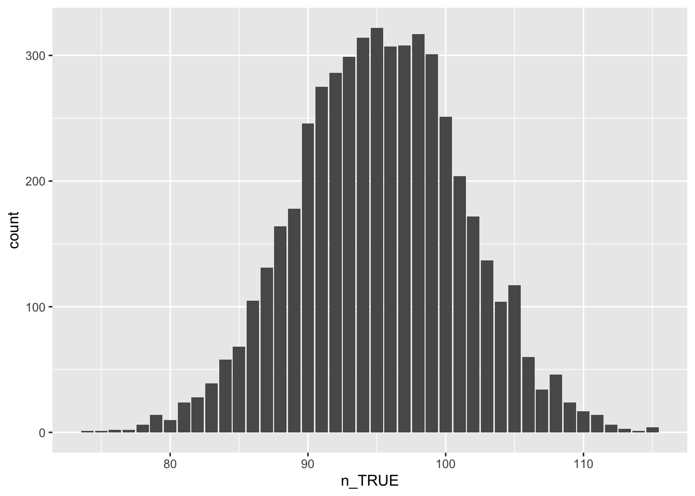

Warum das Nachrechnen von Veröffentlichungen so wichtig ist
Im Internet fand ich vor kurzem einen sehr interessanten Text von Stefan Bart. Eine Aufgabe daraus fand meine besondere Aufmerksamkeit.
HSB gesucht (Grundgesamtheit mit \(H_0 \rightarrow\) Stichprobe)
Es soll die Nullhypothese, dass die 500 Mädchen und 500 Jungen der Schule gleich intelligent sind, getestet werden. Dazu werden 200 zufällige Junge-Mädchen-Paare gebildet. Bei 112 davon hatte der Junge einen höheren IQ. Ist die Abweichung vom Mittelwert signifikant?
Als Lösungen wurden vorgeschlagen:
- grobe Näherung: \[x \in [n \cdot p_0 \pm \sqrt{n}\,] = [200 \cdot 0{,}5 \pm \sqrt{200}\,] \approx [85{,}85786; 114{,}1421] \approx [85; 115]\]
- bessere Näherung: \[\begin{aligned}x \in \left[n \cdot p_0 \pm \Phi(0{,}975) \sqrt{n \cdot p_0 (1-p_0)}\,\right] &\approx \left[n \cdot p_0 \pm 1{,}96 \cdot \sqrt{n \cdot p_0 \cdot(1-p_0)} \,\right] \\ &\approx \left[200 \cdot 0{,}5 \pm 1.959964 \cdot \sqrt{200 \cdot 0{,}5 \cdot (1-0{,}5)}\,\right] \\ &\approx \left[86{,}14096; 113{,}859\right] \\&\approx \left[86; 114\right]\end{aligned}\]
- exakte Lösung: \[x \in [89; 111]\]
Auf Grundlage dieser drei Lösungen wurde dann entschieden, ob die Abweichung signifikant ist, also 112 im oder eben nicht im berechneten Intervall liegt. Ergebnis: a), b) liefern nicht signifikante und c) ein signifikantes Ergebnis.
Die Frage bleibt, was in der Aufgabenstellung mit “200 zufällige Junge-Mädchen-Paaren” gemeint ist.
Bekannterweise kann man diesen Satz interpretieren:
Eine uneingeschränkte Zufallsstichprobe erhält man z. B. bei einem Ziehen ohne Zurücklegen (\(\rightarrow\) Hypergeometrische Verteilung).
Eine einfache Zufallsstichprobe z. B. bei einem Ziehen mit Zurücklegen (\(\rightarrow\) Binomialverteilung).
Rechnet man mit Hilfe von R die exakte Lösung nach, so erhält man:
Für die Binomialverteilung (die “bessere Näherung”):
pl <- 0.025 # 2,5% als untere Grenze
pr <- 0.975 # 97,5% als obere Grenze
iu <- qbinom(pl, 200, prob=0.5)
io <- qbinom(pr, 200, prob=0.5)
c(iu, io) # Ausgabe des (HSB-)Intervalls## [1] 86 114Für die Hypergeometischeverteilung (hier “exakte Lösung” genannt) müssen wir die zwei Gruppen (500 Jungen und 500 Mädchen) jeweils als ein mögliches Paar ansehen. Es gibt somit insgesamt 500 solcher Paare, da jeder Junge und jedes Mädchen in nur einem Paar vorkommen können. – Sehr wohl aber 500! solcher Möglichen Paar-Reihen.
Betrachten wir nun jedes Paar nur einmal, dann ziehen wir aus der Menge der Paare also eine Stichprobe ohne Zurücklegen, also eine uneingeschränkte Zufallsstichprobe. Zum bestimmen der Quantiele und damit des HSB benötigen wir dann die hypergeometrische Verteilung.
Oh ja, diese Annahme ist sehr verwirrend, logisch nicht ganz einzusehen und einfach von Mathematik-Lehrenden gemacht worden, damit man die Hypergeometrischeverteilung hier anwenden kann. Alleine schon die Annahme, dass zwei Personen immer einen unterschiedlichen IQ haben müssen … – Egal!
m <- 250 # Anzahl der Paare mit besseren Mädchen
n <- 250 # Anzahl der Paare mit besseren Jungen
k <- 200 # Umfang des Stichprobe
pl <- 0.025 # 2,5% als untere Grenze
pr <- 0.975 # 97,5% als obere Grenze
iu <- qhyper(pl, m, n, k) # Linke/untere Intervallgrenze
io <- qhyper(pr, m, n, k) # Rechte/obere Intervallgrenze
c(iu, io) # Ausgabe des (HSB-)Intervalls## [1] 89 111R liefert aus exakte Lösung das Intervall \([89; 111]\). Schauen wir einmal genauer hin:
m <- 250 # Anzahl der Paare mit besseren Mädchen
n <- 250 # Anzahl der Paare mit besseren Jungen
k <- 200 # Umfang des Stichprobe
p <- dhyper(0:k, m, n, k)Werte für die linke/untere Intervallgrenzen:
# Werte für die linke/untere Intervallgrenzen:
sum(p[0:89])## [1] 0.01782071sum(p[0:90])## [1] 0.02755396Werte für die rechte/untere Intervallgrenzen:
# Werte für die rechte/untere Intervallgrenzen:
sum(p[0:111])## [1] 0.972446sum(p[0:112])## [1] 0.9821793Wie wird nun gerundet? – Im Text heißt es:
Werden 2,5% und 97,5% nicht genau getroffen, wird hier nicht […] nach außen / . , sondern in beiden Fällen nach rechts . gerundet; d.h. man nimmt diejenigen Werte in das zu bestimmende Intervall auf, bei denen 2,5% bzw. 97,5% zum ersten Mal übertroffen werden. Somit verbleiben weniger als 2,5% der Histogrammfläche am linken bzw. rechten Rand.
Ein paar Überlegungen zum Lösen der Aufgabe mit SBI
Eigentlich haben wir es mit drei Fällen je Paar zu tun:
- \(IQ_{Junge} > IQ_{Mädchen}\)
- \(IQ_{Junge} < IQ_{Mädchen}\)
- \(IQ_{Junge} = IQ_{Mädchen}\)
Tatsächlich spielt hier welches Mädchen und welcher Junge im Paar sind eine entscheidende Rolle.
Simulieren wir nun einmal, dass unsere beiden Gruppe im wesendlichen (und im Mittel) gleich intelligent sind, was wir durch einen gleich mittlenem IQ von 100 und einer Standardabweichung von 15 modellieren wollen:
# Wir laden zuerst das Paket `mosaic`
library(mosaic)
# Zur Reproduzierbarkeit
set.seed(2009)
# IQs für Jungen und Mädchen normalverteilt mit den Parametern mu=100 und sigma=15
# 1. Fassung, aber hier ist F_iq_junger = F_iq_maedchen
#iq_jungen <- rnorm(500, mean=100, sd=15)
#iq_maedchen <- rnorm(500, mean=100, sd=15)
# 2. Fassung
#iq <- rnorm(500, mean=100, sd=15)
#iq_jungen <- iq
#iq_maedchen <- iq
# 3. Fassung
iq_jungen <- rnorm(500, mean=100, sd=15)
iq_maedchen <- rnorm(499, mean=100, sd=15)
iq_maedchen <- c(iq_maedchen, mean(iq_jungen)+499*(mean(iq_jungen)-mean(iq_maedchen)))
# Ein Blick auf die beinden Datenreihen
length(iq_maedchen)## [1] 500length(iq_jungen)## [1] 500mean(iq_maedchen)## [1] 99.22318mean(iq_jungen)## [1] 99.22318Bilden wir nun die Paare:
paare <- data.frame(jungen = iq_jungen, maedchen = iq_maedchen)Und schauen uns nun einmal an, wie oft – bei zufälliger Auswahl von 200 Paarungen – es vorkommen kann, dass Jungen in den Paarungen einen höheren IQ haben als Mädchen. Das wäre dann dem Zufall geschuldet und nicht der übermässigen Intelligenz der Jungen. (Da nach Vereinbarung beide Gruppen gleich intelligent waren!)
NullVerteilung <- do(5000) * count( ~ sample(jungen, 200) - sample(maedchen, 200) > 0, data=paare)
gf_bar( ~ n_TRUE, data=NullVerteilung)
Das HSB für diesen Fall wäre dann:
(hsb <- quantile( ~ n_TRUE, prob=c(0.025, 0.975), data=NullVerteilung))## 2.5% 97.5%
## 83 107Anders formuliert, der zu erwartende Hauptstreubereich ist das Intervall \([83, 107]\)!
Die 112 Paare in denen die Jungen einen höheren IQ haben, sind also nicht zu erwarten. (Also signifikant!)
Norman Markgraf
Diplom-Mathematiker
Norman Markgraf ist freiberuflicher Dozent für Mathematik, Statistik, Data Science und Informatik, sowie freiberuflicher Programmierer.